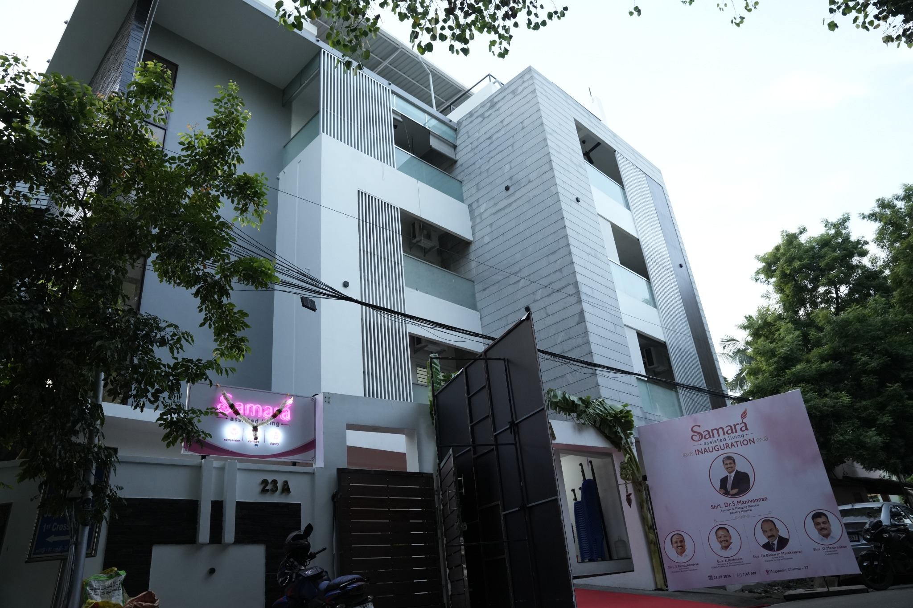
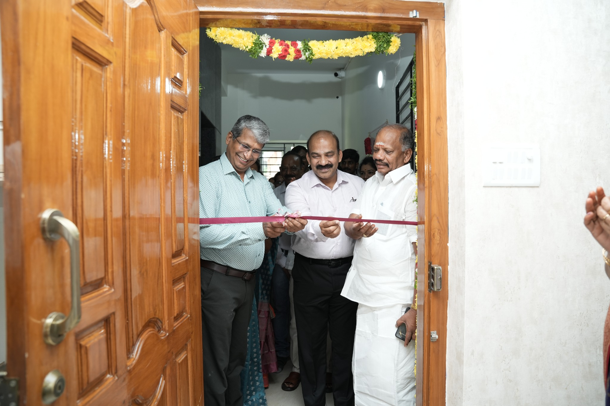
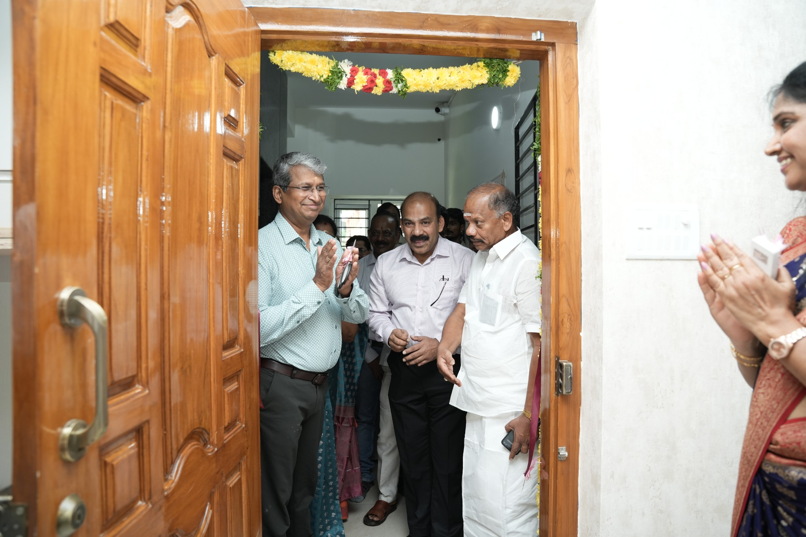
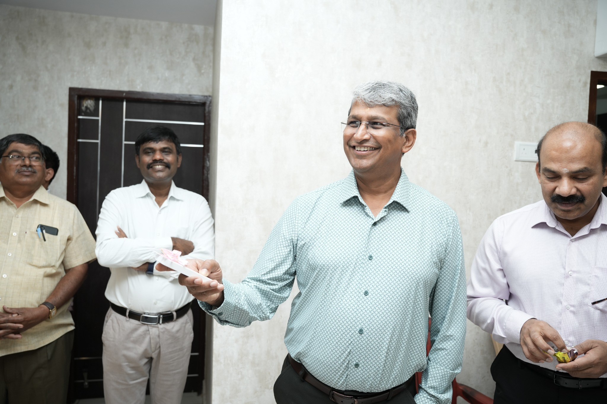

First Digital
Assisted Living Facility
Compassionate resident care strengthened by digital documentation, monitoring and coordinated care workflows.
24×7 Nursing Care Medical Supervision Rehabilitation Support Elder Care
A safe transition from hospital to home
Care That Feels Like Family.
Chennai’s Digital Assisted Living Facility with Family Portal for transparent, connected care.
A Home Where Medical Excellence Meets Compassionate Living, Supported By Smart Digital Care.
Samara Assisted Living, Mogappair, Chennai, was formally inaugurated by Dr. S. Manivannan, Founder & Managing Director of Kauvery Hospitals, on 27 August 2026, in the presence of distinguished guests, eminent medical professionals, industry leaders and well-wishers.
The occasion marked the beginning of Samara’s commitment to professional post-hospital and step-down care, 24×7 nursing support, rehabilitation and dignified elder care — with transparent, connected digital care for families.




Samara combines compassionate assisted living with digital care systems designed to keep families informed and connected.
Compassionate resident care strengthened by digital documentation, monitoring and coordinated care workflows.
Authorised family members can follow approved aspects of resident care with timely updates and better continuity.
Every resident receives an individual care approach based on health needs, independence level and family expectations.
Support with bathing, dressing, feeding, toileting, mobility and everyday routines.
Medication support, vitals, doctor visits, hospital coordination and documented care.
Private, twin-sharing and general accommodation for different preferences and budgets.
Samara supports elderly persons living alone, residents recovering after hospital discharge and families seeking respite or continuing assistance.
Explore ServicesSecure access for registered family members to approved care information and updates.
Authorised family members can securely follow their loved one's wellbeing and important care information from anywhere.